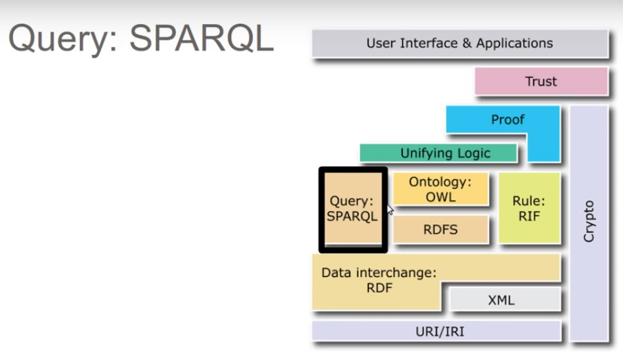
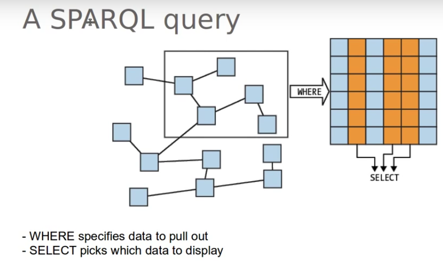
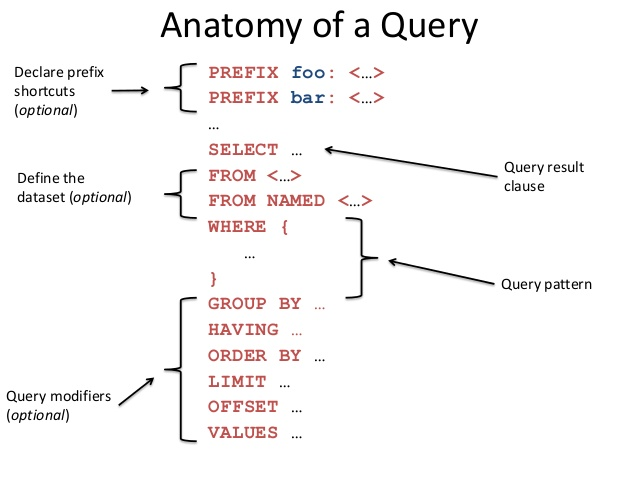

SPARQL
SPARQL (pronounced "sparkle", a recursive acronym for SPARQL Protocol and RDF Query Language) is an RDF query language, that is, a semantic query language for databases, able to retrieve and manipulate data stored in Resource Description Framework (RDF) format. It was made a standard by the RDF Data Access Working Group (DAWG) of the World Wide Web Consortium, and is recognized as one of the key technologies of the semantic web. On 15 January 2008, SPARQL 1.0 became an official W3C Recommendation, and SPARQL 1.1 in March, 2013.

SPARQL allows for a query to consist of triple patterns, conjunctions, disjunctions, and optional patterns.
A SPARQL query

Anatomy of a query

SPARQL has four query forms. These query forms use the solutions from pattern matching to form result sets or RDF graphs. The query forms are:
- SELECT
- Returns all, or a subset of, the variables bound in a query pattern match.
- CONSTRUCT
- Returns an RDF graph constructed by substituting variables in a set of triple templates.
- ASK
- Returns a boolean indicating whether a query pattern matches or not.
- DESCRIBE
- Returns an RDF graph that describes the resources found.
Example
# filename: ex008.rq
PREFIX ab: <http://learningsparql.com/ns/addressbook#>
SELECT ?person
WHERE
{ ?person ab:homeTel "(229) 276-5135"}
person http://learningsparql.com/ns/addressbook#richard
# filename: ex012.ttl @prefix ab: <http://learningsparql.com/ns/addressbook#> . @prefix d: <http://learningsparql.com/ns/data#> . d:i0432 ab:firstName "Richard" . d:i0432 ab:lastName "Mutt" . d:i0432 ab:homeTel "(229) 276-5135" . d:i0432 ab:email "richard49@hotmail.com" . d:i9771 ab:firstName "Cindy" . d:i9771 ab:lastName "Marshall" . d:i9771 ab:homeTel "(245) 646-5488" . d:i9771 ab:email "cindym@gmail.com" . d:i8301 ab:firstName "Craig" . d:i8301 ab:lastName "Ellis" . d:i8301 ab:email "craigellis@yahoo.com" . d:i8301 ab:email "c.ellis@usairwaysgroup.com" .
Offline query example
# GET CRAIG EMAILS
PREFIX rdf: <http://www.w3.org/1999/02/22-rdf-syntax-ns#>
PREFIX owl: <http://www.w3.org/2002/07/owl#>
PREFIX xsd: <http://www.w3.org/2001/XMLSchema#>
PREFIX rdfs: <http://www.w3.org/2000/01/rdf-schema#>
PREFIX : <http://www.semanticweb.org/lananh/ontologies/2016/10/untitled-ontology-3#>
SELECT ?craigEmail
WHERE
{ :craig :email ?craigEmail . }
Online query example
PREFIX ab: <http://learningsparql.com/ns/addressbook#>
SELECT ?craigEmail
WHERE
{ ab:craig ab:email ?craigEmail . }
Query in dbpedia.org
SELECT * WHERE {
?a ?b ?c .
} LIMIT 20